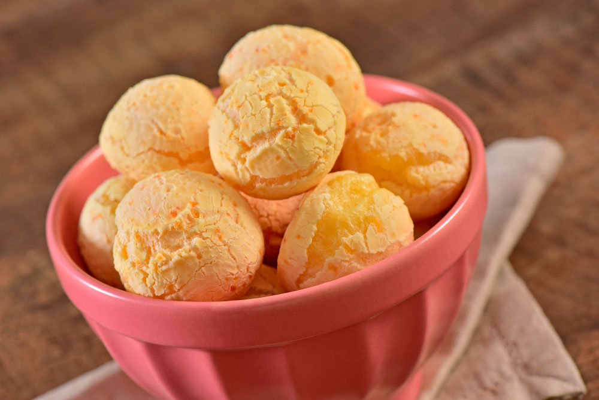

Delicias de Minas
Pao de queijo.

Ingredientes
• 1 ovo inteiro
• 1 colher (café) de sal
• 1 xícara (chá) de leite
• 1 xícara (chá) de queijo minas meia cura ralado
• 1 xícara (chá) de polvilho azedo
PORÇÕES
Servir 15 pessoas
TEMPO DE PREPARO
50 minutos
Passo a Passo.
1. Em uma vasilha, misture todos os ingredientes, menos o leite.
2. Em seguida, vá adicionando o leite aos poucos, até que a massa fique homogênea.
3. Modele os pães e coloque-os em forma untada com óleo.
4. Levar ao forno pré aquecido por 40 minutos ou até dourar.